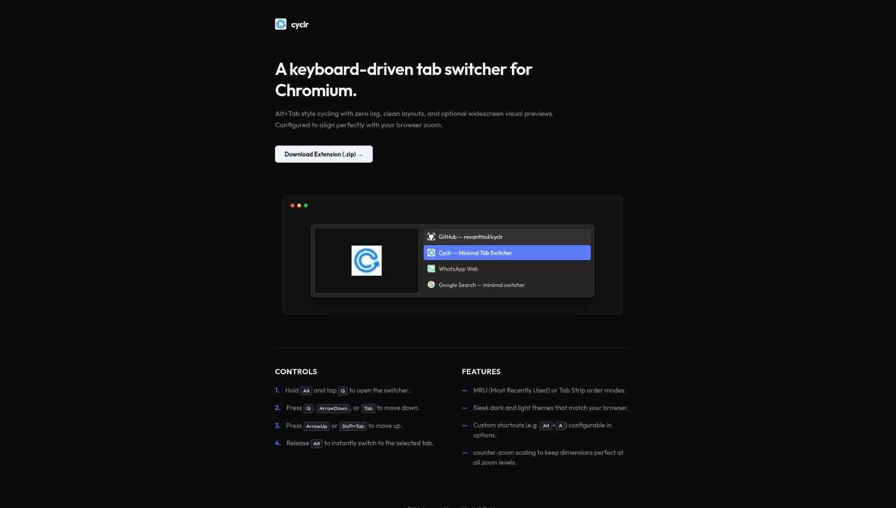
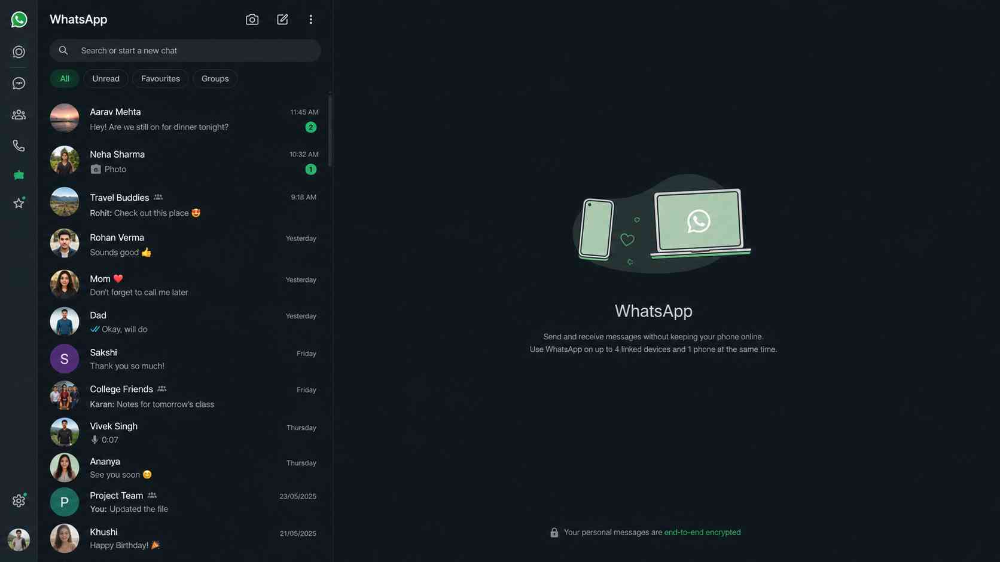
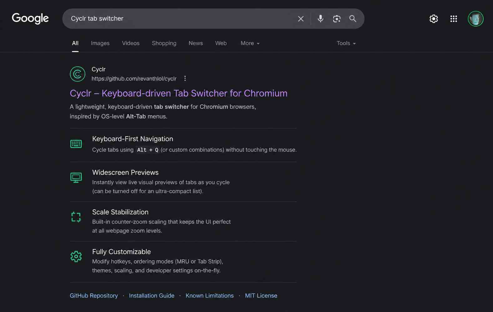
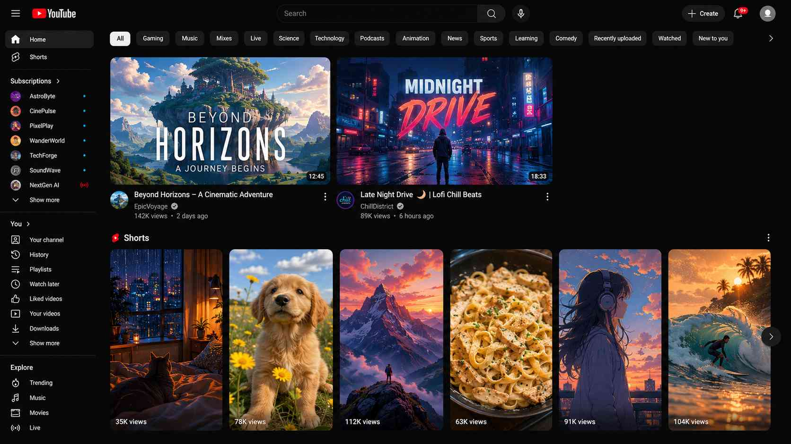
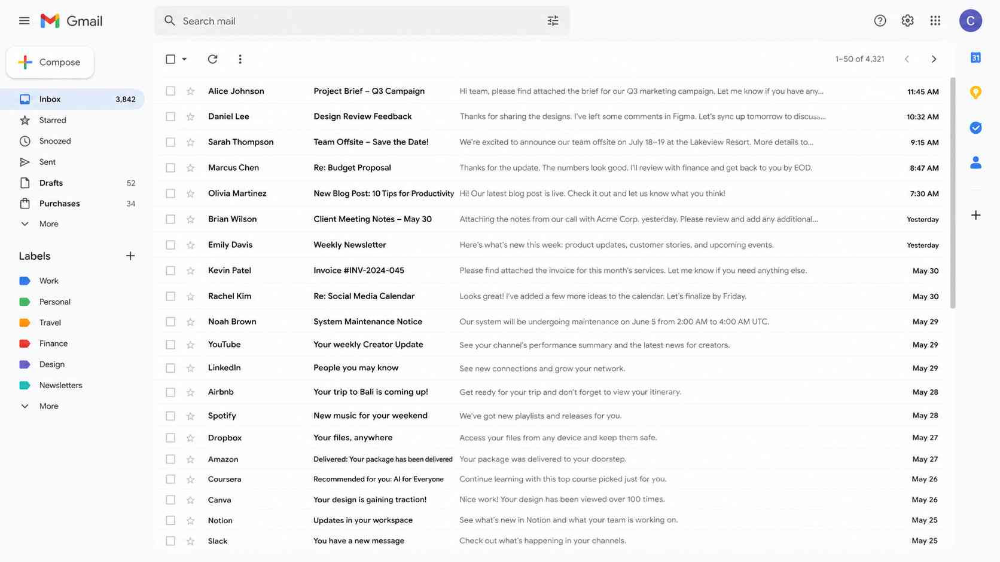
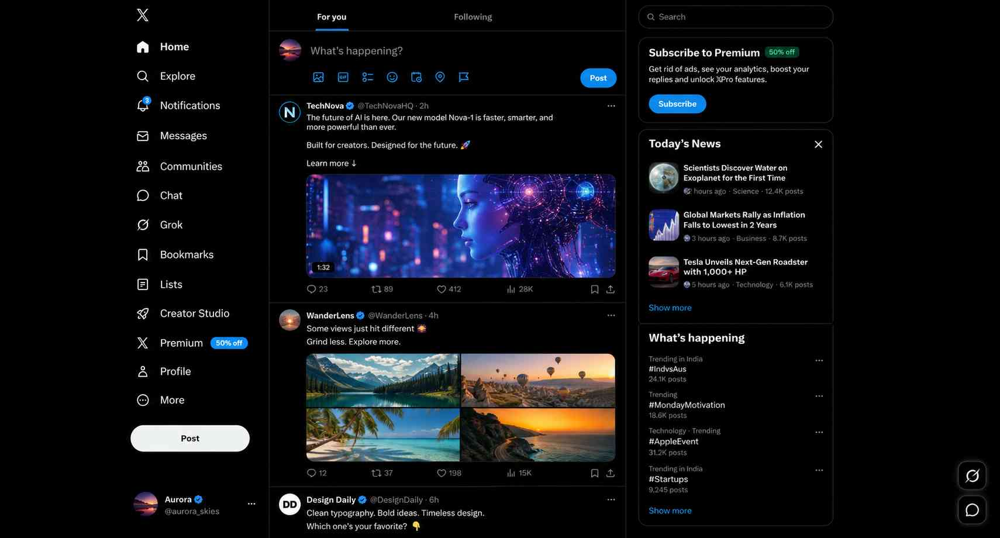
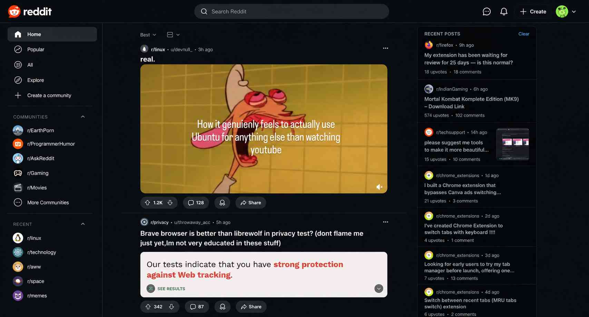

A keyboard-driven tab switcher extension.
Both Firefox & Chromium users can download the latest release and load it as an unpacked extension or an temporary extension according to their browser ( recommended for now ).
Latest Version: Loading...








Controls
- 1. Hold Alt and tap Q to open the switcher.
- 2. Press Q, ArrowDown, or Tab to move down.
- 3. Press ArrowUp or Shift+Tab to move up.
- 4. Release Alt to instantly switch to the selected tab.
- 5. Press Alt+W to close the selected tab.
- 6. Press Esc to close / cancel the action.
Features
- — MRU (Most Recently Used) or Tab Strip order modes.
- — Sleek dark and light themes that match your browser.
- — Custom shortcuts (e.g. Alt+A) configurable in options.
- — counter-zoom scaling to keep dimensions perfect at all zoom levels.